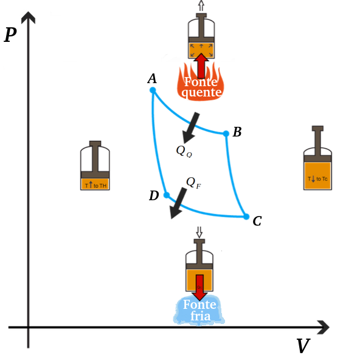
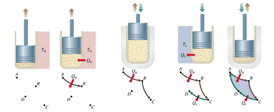
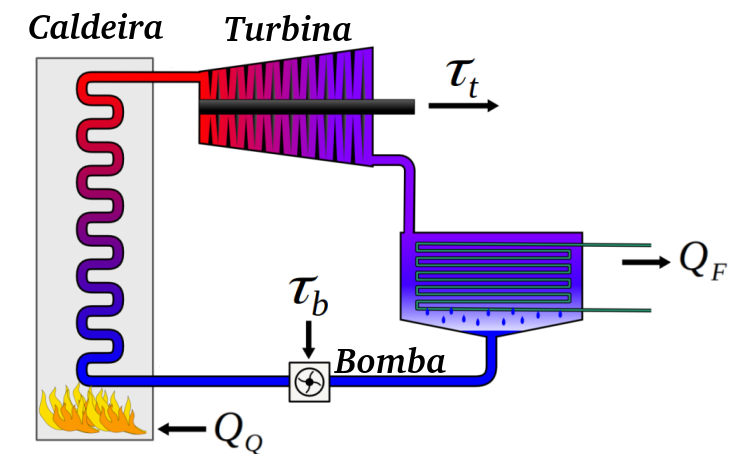

Aula6-50: Ciclos termodinâmicos: ciclo de Carnout
Ciclo termodinâmico
São as transformações gasosas cíclicas, ou seja, transformações nas quais o gás, após passar por alguns estágios, retorna sempre ao seu estado inicial. Existem muitos tipos de ciclos termodinâmicos, falaremos apenas de alguns, dando especial enfoque ao ciclo de Carnout.
Ciclo de Carnout
É o ciclo ideal, pois, quando implementado em máquinas térmicas, fornece o maior rendimento possível. Ele é basicamente constituído de duas expansões, uma isotérmica seguida de uma adiabática; e duas compressões, igualmente uma isotérmica seguida de uma adiabática.
|
 |
◦ Expansão isotérmica AB: o gás retira energia térmica da fonte quente; ◦ Expansão adiabática BC: o gás se expande sem trocar calor, ocasionando uma queda de temperatura; ◦ Compressão isotérmica CD: o gás rejeita energia térmica para a fonte fria; ◦ Compressão adiabática DA: o gás comprime sem trocar calor, ocasionando um aumento de temperatura. |

➔ O RENDIMENTO NO CICLO DE CARNOUT
Como aprendemos anteriormente, podemos calcular o rendimento de uma máquina térmica, independentemente do ciclo operacional, através da seguinte expressão:
Em se tratando de ciclo de Carnout – e isto só é verdade para este ciclo; é verdadeira a seguinte igualdade:
Em que
e
são as temperaturas da fonte fria e fonte quente respectivamente, em kelvin. Substituindo a igualdade na expressão supracitada, obteremos a seguinte fórmula para o cálculo do rendimento de uma máquina que opera em ciclo de Carnout:
➔ TEOREMA DE CARNOUT
I. Primeiro enunciado
Nenhuma máquina térmica que opere entre duas dadas fontes , às temperaturas e
, podem ter maior rendimento que uma máquina de Carnout operando entre estas mesmas fontes
II. Segundo enunciado
Qualquer máquina de Carnout operando entre um mesmo par de temperaturas epossuem o mesmo rendimento , independentemente do gás ou material empregado na construção da máquina
Outros ciclos termodinâmicos
➔ CICLO DE OTTO
É o tipo de ciclo que rege o funcionamento de motores à combustão interna por ignição a faísca (motor a gasolina e/ou etanol), é, portanto, o ciclo que ocorre nos motores dos carros convencionais de pequeno porte.
➔ CICLO DE DIESEL
É o tipo de ciclo que rege o funcionamento de motores à combustão interna por inflamação via aumento de temperatura (motor a diesel), é, portanto, o ciclo que está presente nos motores de carros de médio e grande porte.
➔ CICLO DE RANKINE
É o ciclo presente em praticamente todos os motores a vapor. Ademais, este ciclo é o que conduz as máquinas térmicas que fazem funcionar as usinas de geração elétrica (termelétricas e nuclear) do mundo moderno. Estima-se que este ciclo é responsável pela geração de 90% de toda a energia elétrica produzida no mundo.
